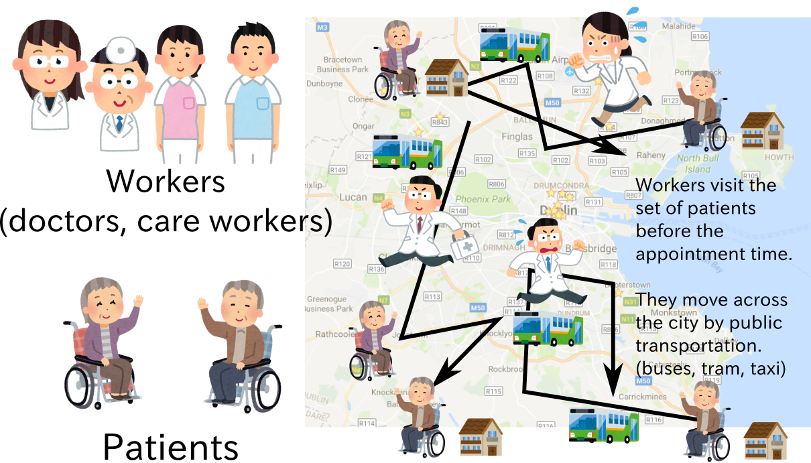
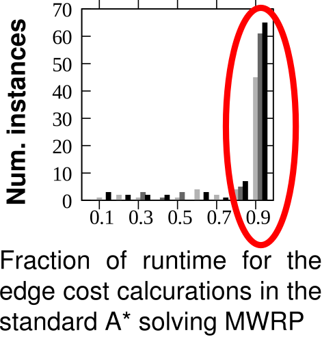
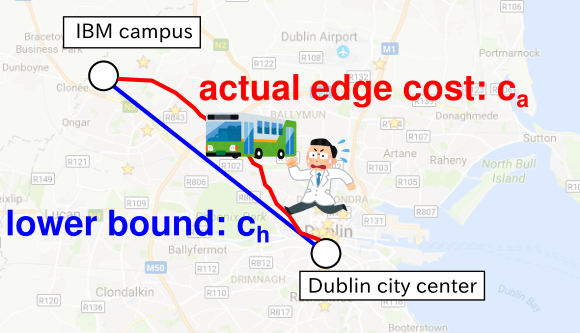
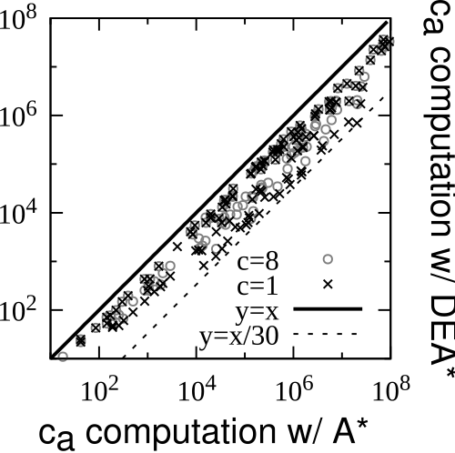

Efficient Optimal Search under Expensive Edge Cost Computation
Masataro Asai (U Tokyo)
Akihiro Kishimoto, Adi Botea, Radu Marinescu, Elizabeth M. Daly, Spyros Kotoulas
(IBM Research Ireland)
15min including Q&A: 12 min?
paper id: 3047
1 Domains where edge-costs are not known apriori
Example 1: TSP with unknown edge costs
- Edge cost = pairwise distance between cities
- given apriori in the standard setting
- However, when the edge cost is NOT given …
- Solve O(N2) shortest path problems (all pairs of cities)
- before solving the TSP itself (N: number of cities)
- Practically, edge cost computation could dominate the search time.
2 Domains where edge-costs are not known apriori
Example 2: Multiple Worker Routing Problem (Our main problem of interest)

2.1 Multiple Worker Routing Problem (MWRP)
- Worker initial locations $w_j$, patients locations $p_i$, visit all patients
- Appointment time $a_i$, arrival time $t_i$, minimize the sum of delays $\sum \max(0, t_i - a_i)$
- Travel time function $\tau(x,y,t)$ where $x,y$are locations, $t$is departure time
- More buses in the rush hour, fewer buses around noon
- DIJA Multi-modal Journey Planning Solver [Botea et.al. 2013] for computing $\tau$
- DIJA could take ~100 seconds for each query (in the worst case)
- Brute force precomputation of $\tau(x,y,t)\;$is impractical, given the large number of queries
| City | Num. locations in the roadmap data |
|---|---|
| Dublin | 301,638 |
| Montpellier | 152,949 |
| Rome | 522,529 |
2.2 NP-hardness results skip
Decision problem (is the total delay below some D ?)
Reduction from Single Machine Total Tardiness Problem (SMTTP) (Du and Leung 1990)
(Detail omitted due to time constraints)
3 Initial Results: Search performance "does not matter"
We tried a trivial approach with A*
- Evaluate the edge cost using DIJA for computing g() value of A*
- The results of DIJA are cached
- the same edge is never computed twice
- The results of DIJA are cached
- In most problems 90% of the runtime is spent by DIJA
- The true bottleneck = edge cost computation!

4 Delayed Expansion A* (DEA*)
- The edge cost is computed by an external solver, is expensive
- Our idea: Delay the full edge evaluation, only partially evaluate the cost
- Getting the lower bound ch of the edge cost ca from the external solver
- Because the external solver itself is a search algorithm (DIJA is a AO* solver)
- Insert a temporary node whose $g(node) = g(parent) + c_h(node, parent)$
- Fully evaluate the edge cost only when it is necessary; reinsert the node

- This applies to most of the hierarchical problems,
- transportation (like MWRP)
- motion planning (local path vs high-level task)
4.1 A* vs DEA*
4.2 Some properties
DEA* maintains the same expansion order as A*
The results are thus optimal w/ admissible heuristics
May cause x2 OPEN list operations
Actual performance also depends on the caching mechanisms
5 Experimental Results on MWRP no_time_to_describe_the_detail
180 MWRP instances, 3 cities, 6/12 workers, 8/24 patients, one-hour schedule
P and W are selected in the 2km radius of the city center
Random appointment time
Using blind, h1 and h2 heuristics (computed with ch )
1 hr runtime, 1.5 million node
| City | Num. locations in the roadmap data | Map diameter | |
|---|---|---|---|
| Dublin | 301,638 | 10km | |
| Montpellier | 152,949 | 6km | |
| Rome | 522,529 | 10km |
5.1 Results
5.2 External Runtime comparison (time spent on DIJA)
DEA* spends less runtime on the external calls
6 Classical Planning Results
Domain-independent scenario
- Classical Planning domains : assumes edge costs
- Simulated domains where the costs should be dynamically computed
- $c_h = c_a - C\;$for some constant $C\;$(almost perfect heuristics)
- Measure the number of $c_a$computation (insertion of OPEN nodes)
barman, cybersec, elevators, floortile, openstacks, parcprinter, pegsol, scanalyzer, sokoban, transport and woodworking
(cf. state dependent action costs)
6.1 Results
(30min, 4GB)
Depending on $C\;$, DEA* could reduce the full edge cost evaluation
up to x30 times ($C=1$), typically x6.5 (average), at least x1.7 (min.)

7 Related work: PEA* motivation does not apply to this problem
Partial Expansion A* (Yoshizumi et.al. '00, Goldenberg et.al. '14)
→ Expands all successors (= requires every edge cost)
→ Discard some successors (reduce the memory usage)
→ Addresses the high branching factor in MSA (Multiple Sequence Alignment)
Does not address unknown/expensive edge costs (e.g. costs are given in MSA)
8 Conclusion
Introduction and NP-hardness (skipped) of MWRP
The bottleneck of solving MWRP is the external calls to obtain the edge cost
DEA* reduces the full calls to the external solver by
temporary nodes , g = g(parent) + ch, the lower bound of ca (actual cost)